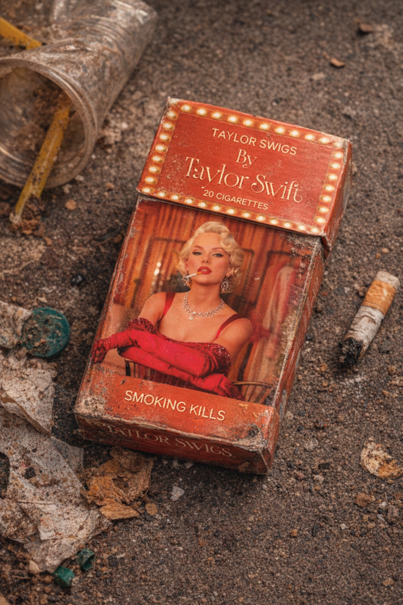
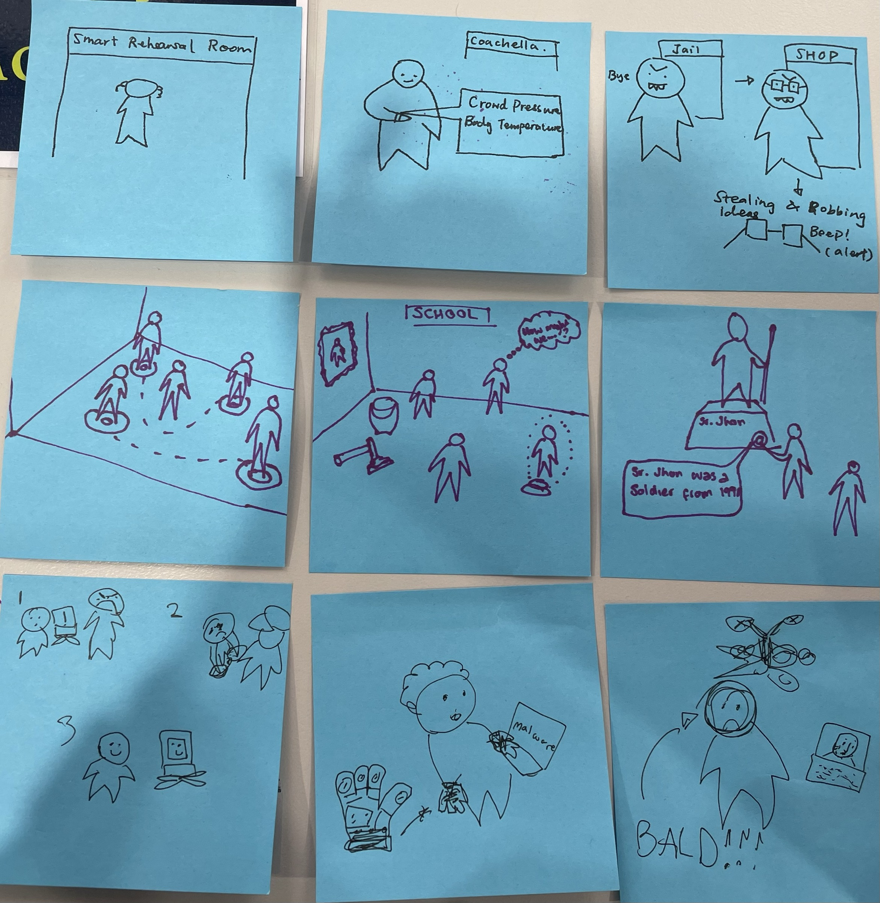
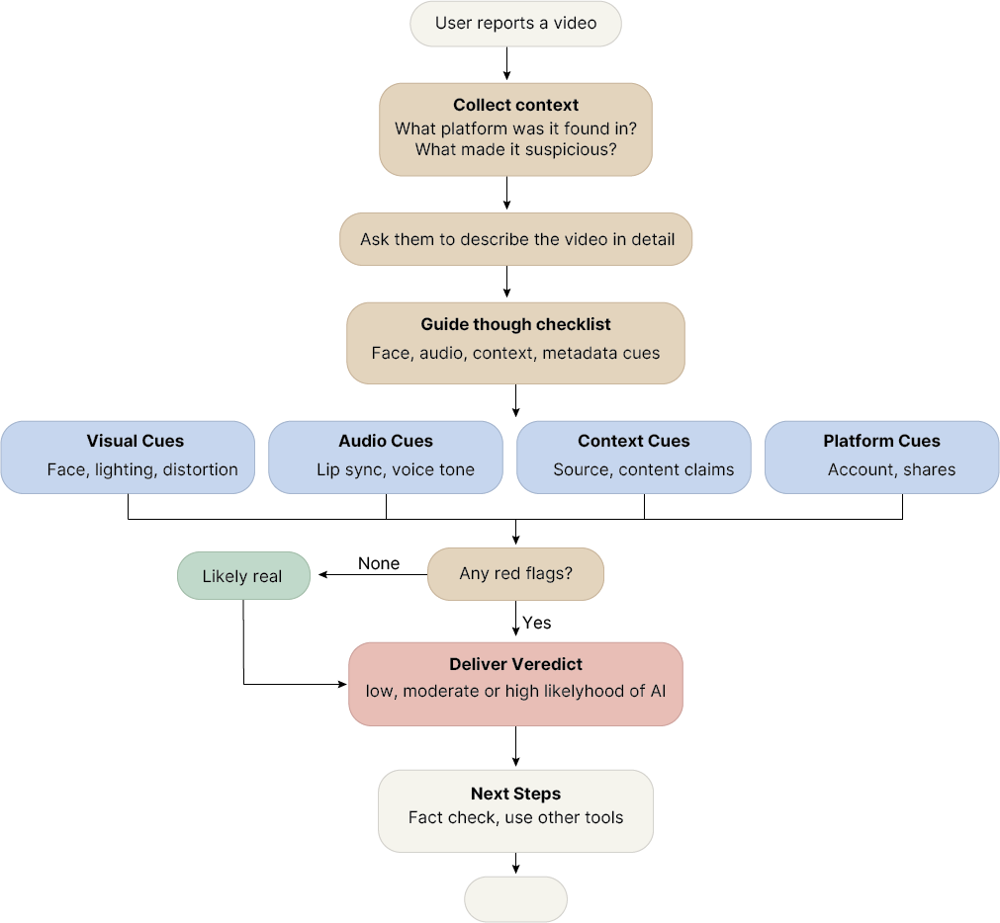
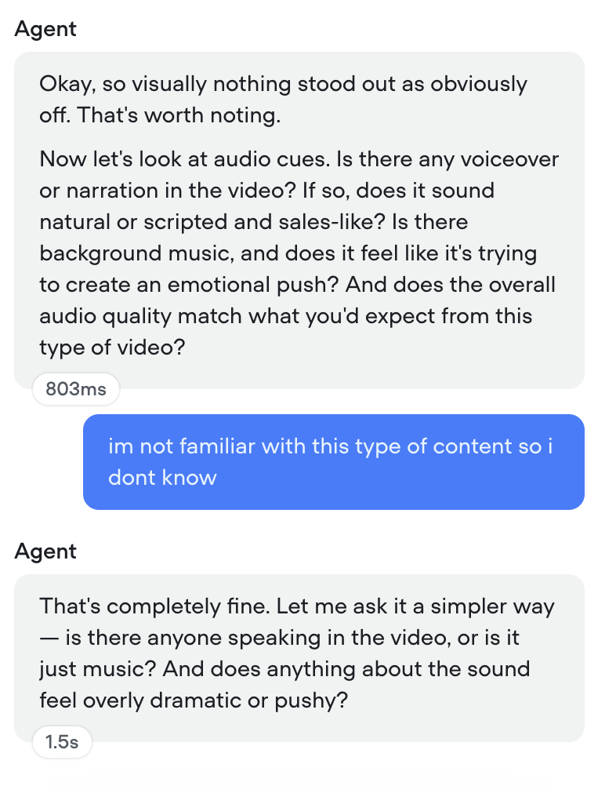

ADVANCED INTERFACE PROTOTYPING
A2.I2 Individual Contribution Statement. Portfolio

Contributions
Overall, my team had excellent contributions, work was completed on time and to a high standard, discussions were balanced, ideas and critical thinking were shared tasks. All team members communicated effectively, which was a key strategy to the success of our collaboration.
My role
- My contributions to A2 focus on collaborative idea generation and discussions, class teamwork and final production of assignments.
- In futures thinking I helped identify drivers of change as well as forecasting potential futures. I designed the Tailor Swigs artefact and placed it in the scene using AI, I also reflected on the implications of the preferred future both ideal and unintended.
- For the conceptual design I created the storyboard and reflected on its potential improvements, contributed to the discussions of potential proposals for extended reality as well as the smart device, as well as the reflection and comparison of these ideas.
- For the refined prototype I came up with our chosen chatbot direction as well as developed the video analysis functionality, I did the human-centered design challenges and contributed to overall discussions and troubleshooting of the chat bot.





Discussion and Reflection of AI use
AI was used to develop some aspects of the assignments I found one of its greatest’s strengths was image generating specially for the proposed futures, it was fast and effective at creating a fictional image based on written description. I do attribute some of its success to the fact that the cover design was done by me so there was no original creative work needed, something it struggles with, the image generated is quite obviously recognisable as AI to someone of medium digital literacy but make a good prototype, its limitations also include the restrictions of potentially harmful or defaming content so the image needed post editing to fit our requirements.
Direct experimentation with different LLMs was possible though Voiceflow, I was surprised by the difference the cheaper VS expensive models made to the user experience and accuracy of results. This process also highlighted the limitations cheaper models have and the frustrations they can create for users.
I never attempted to use AI for any content as from previous experience it is shallow and ineffective, human-centred design must always be created from a human mind as it is our human qualities that provide the insights and understandings innate to human users.
Skills and Learning
This subject has really helped me broaden my thinking, a key skill for UX designers, I have developed the capability to think of future directions and tackle problems from a perspective of iteration and reflection, it has highlighted the need for broad idea generation as well as critical thinking when it comes to the limitations and potential results of my ideas.
This subject has kickstarted a thinking pattern that I will continue to develop in my career, the perspective from which I problem solve now includes a broad range of tools that I hope to keep expanding and developing.
AI acknowledgement
Acknowledgement of tools used: I acknowledge the use of Cursor to help code and debug the layout of this portfolio.
Cursor can quickly provide a framework and recognise errors in code but can often overcompensate by generating coverup code to fix things visually rather than fixing existing structure which is best in the production of clean and editable work.